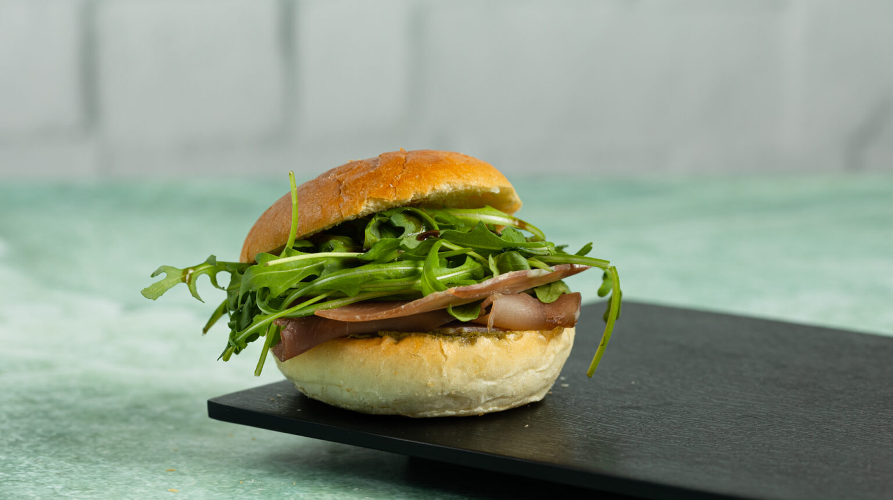

Home
Prosciutto Sandwich

A goofy sandwich I enjoy to make when I want to feel fancy. It tastes quite good if you get the frying right!
Ingredients
- A brioche bun
- A few slices of mozzarella cheese
- A few thin slices of prosciutto
- Basil (or basil paste)
- Spinach (or greens of your choice)
- Sun dried tomatoes (in a jar, with oil)
Steps
- Bring a small pan to heat and add some sun-dried tomatoes along with some oil from the jar.
- While waiting for them to cook down, place mozzarella cheese, prosciutto, basil, and spinach on brioche bun.
- Add sun dried tomatoes to sandwich and quickly fry the sandwich bread in oil at high heat.
- Enjoy!